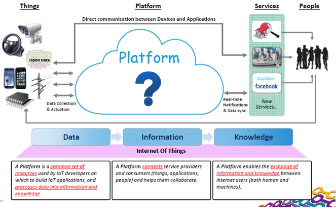
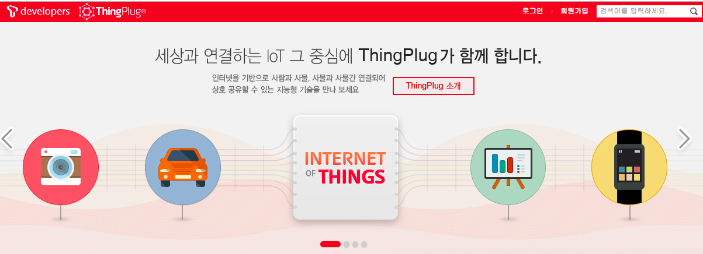
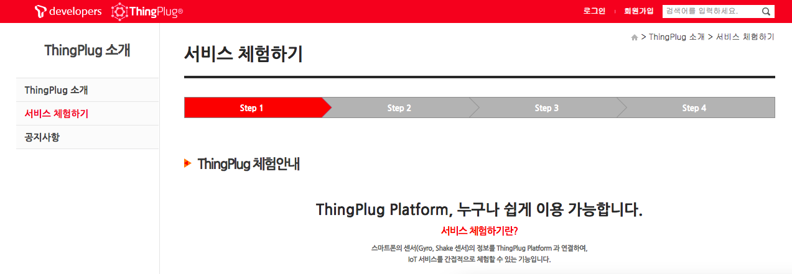
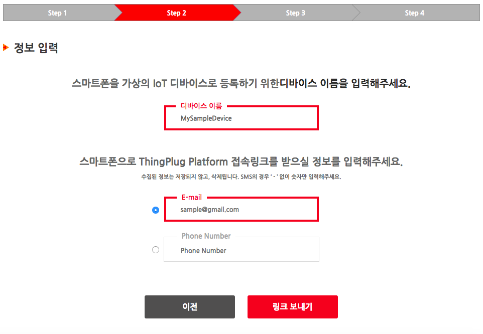
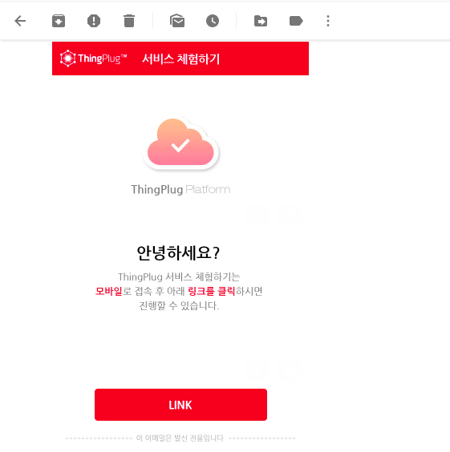
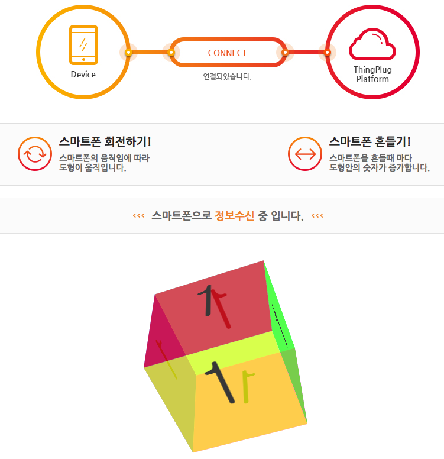
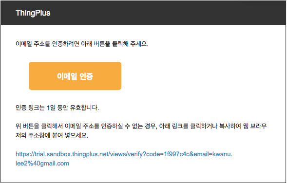
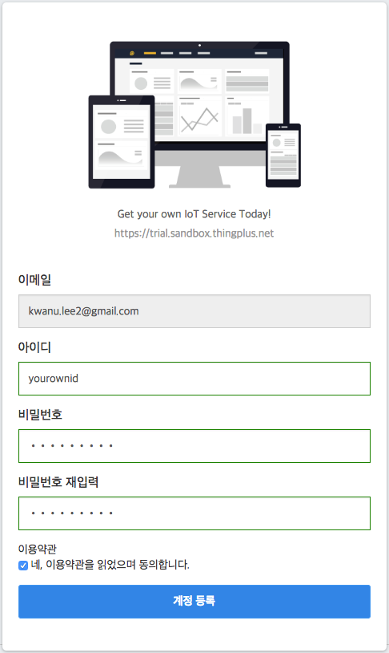
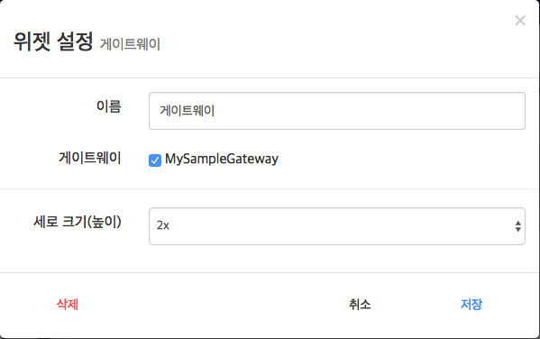
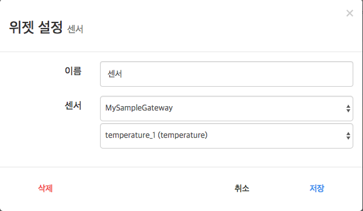

사물인터넷 플랫폼
학습 목표
- 사물인터넷 플랫폼 기술의 용어와 개념을 이해한다.
- 다양한 사물인터넷 플랫폼 제품의 사용을 실습한다.
1. 개요
1.1 사물인터넷 서비스란
사물인터넷(Internet of Things, 약어로 IoT)은 각종 사물에 센서와 통신 기능을 내장하여 인터넷에 연결하는 기술.
사물인터넷 서비스는 사물인터넷 기술을 활용하여 사용자에게 새로운 가치를 제공하는 기능
- 사물들로부터 수집된 정보를 저장 및 모니터링
- 규칙 엔진 혹은 사용자에 의한 사물들의 원격 제어
- 사물들로부터 수집된 정보를 분석 및 학습하여 지능화된 서비스 제공
1.2 사물인터넷 플랫폼이란?
- 사물들로부터 데이터를 수집하거나 사물의 제어방법 제공, 사물기기 관리, 연결 기능 등을 제공하는 공통시스템
플랫폼은 서버나 클라우드 형태로 제공됨

1.2.1 클라인트-서버 모델 [참고자료]
1.2.2 클라우드 서비스란?
클라우드 서비스란 인터넷 상에 컴퓨팅 자원(저장소, 애플리케이션, 컴퓨터, 네트워크 등)을 보관해 두고, 사용자가 필요한 자원을 인터넷 접속을 통해 언제 어디서나 이용할 수 있는 서비스를 말한다.
클라우드 서비스 모델
SaaS (Software as a Service)
- 응용 프로그램을 웹서비스 형태로 제공
- 예, Google Docs, Gmail, 등
Paas (Platform as a Service)
- 응용 프로그램 개발자를 위한 서비스로, 개발자들이 기반 인프라스트럭처에 대해 신경을 쓰지 않고 앱을 개발하고 테스트할 수 있는 환경을 제공
- 예, Google Cloud Platform, Firebase, AWS IoT, 등
IaaS (Infrastructure as a Service)
- 컴퓨팅 파워, 스토리지, 네트워크 등을 서비스 형태로 제공
- 예, AWS, Google Cloud, Azure, 등
클라우드 서비스의 이점
- 비용
- 초기 인프라 자원 투자에 대한 부담 감소
- 데이터 센터 운영 및 유지 관리에 비용 투자 불필요
- 사용한 양에 따른 비용 구조
- 유연성
- 개발 용이성
- 빠른 인프라 구축을 통한 개발 라이프사이클 단축
- 다양한 형태의 서비스에 대한 솔루션 제공
IoT 클라우드 서비스 구현
오픈 IoT 클라우드 플랫폼 사례
2. ThingPlug 플랫폼 체험하기 [실습]
스마트폰의 센서(Gyro, Shake 센서)의 정보를 ThingPlug Platform 과 연결하여,
IoT 서비스를 간접적으로 체험할 수 있는 기능입니다
- https://sandbox.sktiot.com/ 접속
- 화면 중앙 위에 있는 [ThingPlug 소개] 클릭

- 왼쪽 메뉴 중에 [서비스 체험하기] 클릭

- [체험 시작하기] 클릭
- 디바이스 이름과 E-mail을 입력후 [링크 보내기] 클릭

- 스마트폰으로 전송된 Link를 클릭하여, ThingPlug Platform과 연결

- 스마트폰을 회전시키거나 흔들어서 ThingPlug 플랫폼의 변화를 확인한다.

3. KT IoTMakers 플랫폼 [실습]
3.1 회원가입
- http://iotmakers.kt.com/openp/index.html#/auth/join 접속하여, 이용약관 및 개인정보 수집 및 이용에 동의한 후에, 아이디, 이름, 비밀번호를 포함한 필수정보를 입력후에 회원가입을 진행
- 회원가입 후, 등록된 아이디와 비밀번호로 login
3.2 디바이스 등록
- [IoT 개발]-[나의 디바이스] 선택
- [디바이스 등록] 버튼 클릭
- 디바이스 정보 등록
- 디바이스명으로 sample device 입력 후, 디바이스 등록 버튼 클릭
- 나의 디바이스 목록에서 태그 스트림 및 이벤트를 등록할 디바이스를 선택
- Tag Stream 탭의 태그 스트림 생성 버튼 클릭
- Tag Stream ID에 temperature 입력후, 생성 버튼 클릭
- Event 탭의 이벤트 생성 버튼 클릭
- 이벤트 생성 조건 설정
- 이벤트 이름: 비정상 온도
- 이벤트 발생조건: temperature, >, 40 설정
- 저장 버튼 클릭
3.3 가상 디바이스 시뮬레이터 등록
- [IoT 개발]-[가상 디바이스 등록] 선택
- 시뮬레이터 등록 버튼 클릭
- 가상 디바이스 등록 화면에서, 다음 정보 입력
- 가상 디바이스 시뮬레이터 이름: mySampeDeviceSIm 입력
- 디바이스 이름: 생성된 디바이스 중에 하나(예, sample device) 선택
- 시작 시간 및 동작 시간: 현재시간 과 5분 선택
- 데이터 생성 주기: 5초 선택
- Tag Stream 목록에서 temparature를 더블클릭 후, 시뮬레이션 조건 설정
- 저장 버튼 클릭
3.4 대시보드 꾸미기
- [IoT 개발]-[나의 대시보드] 선택
- + 버튼을 눌러 다양한 위젯 생성
- 디바이스 현황 위젯 선택 후, 추가 버튼 클릭
- 설정(톱니바퀴 모양 아이콘)을 클릭 후, 왼쪽 디바이스 목록의 sample device를 보여줄 디바이스 목록으로 이동하고, 저장 버튼 클릭
- 실시간 태그 스트림 현황 위젯 선택 후, 추가 버튼 클릭
- 디바이스 선택에서 sample device를, 수집 태그스트림에서 temperature*를 선택 후, 추가 클릭 후, 저장 버튼 클릭
- 필요에 따라 여러분의 대시보드를 꾸며보세요.
3.5 이벤트 관리
- [IoT 개발]-[이벤트 관리] 선택
- 발생된 이벤트 조회
4. Thing+ 플랫폼 [실습]
4.1. 회원가입
- https://thingplus.net 접속
- 상단에 위치한 가입하기 버튼을 통해 회원가입 페이지로 이동합니다.
- 개인 사용자 무료로 가입하기를 진행합니다.
- 자신의 이메일 주소를 입력한후 회원가입 버튼을 클릭합니다.
- 입력한 이메일 주소로 보내진 인증 메일을 확인하고 이메일 인증 버튼을 눌러 회원가입을 진행합니다.

- 아이디, 비밀번호, 비밀번호 재입력 란을 채운후, 이용약관의 동의를 체크하고 계정등록을 완료합니다.

4.2 게이트웨이 등록
Thing+와 연동된 하드웨어를 통해 누구나 쉽게 디바이스를 클라우드로 연결할 수 있습니다. 디바이스의 상태를 원격에서 관리할 수 있으며, 안정적인 연결과 보안 기능을 제공합니다.
아직 보유한 게이트웨장비가 없다면, 가상 게이트웨이를 등록하실 수 있습니다.
- 화면 우측 상단의 [설정]의 [게이트웨이 관리] 메뉴 선택
- 화면 상단의 + 버튼으로 게이트웨이를 등록할 수 있습니다.
- [가상 게이트웨이 등록] 게이트웨이 등록하기 화면에서 다음 정보 입력 후, [게이트웨어,디바이스,센서 등록 진행] 버튼 클릭
- 게이트웨이 모델 : Virtual Gateway-Simulator 선택
- 게이트웨이 이름: MySampleGateway 입력
- 디바이스 모델: Air Environment 선택
- 디바이스 이름: MySampleDevice 입력
- 화면 우측 상단의 [설정]의 [게이트웨이 관리] 메뉴 선택하여, 새로이 생성된 게이트웨어 확인
4.3 대시보드 꾸미기
Thing+의 다양한 위젯을 기반으로 자신만의 맞춤형 대시보드를 꾸밀 수 있습니다. 언제 어디서나 실시간 모니터링이 가능하며, PC, 태블릿, 모바일 등 모든 클라이언트 환경을 지원합니다.
- 화면 상단의 [대시보드] 메뉴 선택
- 화면 상단의 + 버튼으로 다양한 위젯을 추가할 수 있습니다.
게이트웨이 위젯 추가하기
- 화면 상단의 위젯 메뉴중에 [게이트웨이] 클릭
추가된 위젯에서 [게이트웨이] 버튼 클릭 후에, 위젯 설정 화면에서 MySampleGateway 선택

센서 위젯 추가하기
- 화면 상단의 위젯 메뉴중에 [센서] 클릭
- 추가된 위젯에서 [센서] 버튼 클릭 후에, 위젯 설정 화면에서 모니터링하고자 원하는 게이트웨이와 센서를 선택후 [저장] 버튼 클릭

유사한 방법으로 자신만의 대시보드를 꾸며 봅니다.
4.4 규칙 설정하기
트리거 - 컨디션 - 액션
모델을 기반으로 다양한 규칙 설정 기능을 제공합니다. 조건에 따른 이벤트 발생 등의 간단한 규칙부터 날씨와 같은 외부 환경 변수를 포함한 복합 규칙도 설정할 수 있습니다.
- 화면 우측 상단의 [설정]의 [규칙 관리] 메뉴 선택
- 화면 상단의 + 버튼으로 새로운 규칙을 생성할 수 있습니다.
- 템플릿 사용 메뉴 선택
- 온도 이상 감지 위젯의 + 버튼 클릭
- 규칙만들기 화면에서 센서 목록의 체크박스 선택후, 시작값과 끝 값을 설정하고, 이메일 제목을 입력 후에, 저장버튼 클릭
4.5 타임라인 살펴보기
설정한 규칙에 의해 발생하는 모든 이벤트를 트위터와 같은 타임라인 형태로 제공합니다. 단계(심각/경고/정보)를 지정할 수 있으며, 규칙 및 디바이스 별로 발생한 타임라인을 분류해서 확인할 수 있습니다.
- 화면 상단의 [대시보드] 메뉴 선택
- 화면 상단의 위젯 메뉴 중에서 [타입라인] 선택